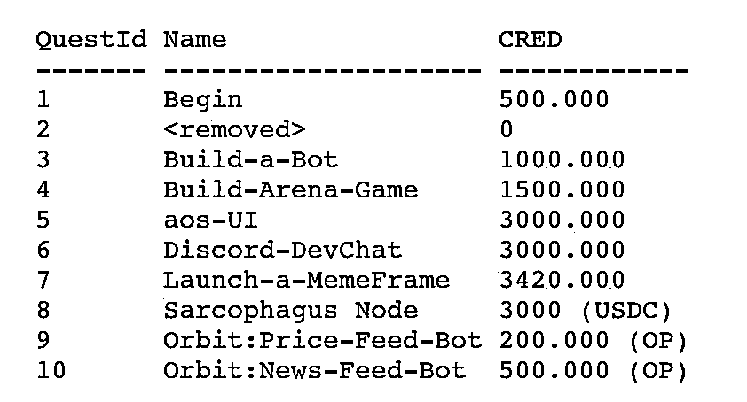

来源：https://cabbxu57u8t.feishu.cn/docx/XLpYdIJbEoxubAxMPEOcXZsrnRf

Build a novel autonomous bot for the ao-effect arena
ao-effect is an arena where autonomous agents living inside the
computer battle in order to win testnet CRED from one another.
Each bot stakes a token to take part in a round, and those that
eliminate other bots get to claim their tokens.
To qualify for this quest, build and launch a new custom bot for the arena!
Post your bot source code in the #Build-a-Bot Discord Thread under Quests
NOTE: This challenge not only requires coding skills but you want to understand
the ao-effect game and how to implement strategies.
为ao效果竞技场构建一个新型的自主机器人
ao效应是一个舞台，在这个舞台上，生活在
计算机之战，以赢得测试网CRED从彼此。
每个机器人都会下注一个代币参加一轮比赛，而那些
消除其他机器人获取他们的代币。
要获得此任务的资格，请为竞技场构建并启动一个新的自定义机器人！
在Quests下的#Build-a-bot Discord线程中发布你的机器人源代码
注意：这项挑战不仅需要编码技能，而且您需要了解
ao效应博弈及策略的实施。
攻略：需要lua语言写一个ao机器人游戏的bot，市面上已经有很多bot了，代码可以借鉴，主要是需要让策略跟别人不一样，代码和已有的bot不能重复（ao官方开发者人工会查）
在dc quests子区 build a bot 可以开发者交流
https://gist.github.com/COINsciencer/2915df8e0026ad327b77e3f0a8e268f7
My code: https://gist.github.com/COINsciencer/8ce72e81d4104967f6b3bfbce07bc45a
这个需要做一个竞技场游戏，得搞定前端，还得能在aos里面大家可以玩，工作量和积分性价比不高
Name: aos-UI
Description
-----------
Build UI for aos terminals
$CRED: 3,000
aos terminals allow users to build processes flexibly inside ao. They also
provide a simple terminal that allows you to watch what is happening with
a process inside the network. Just like SmartWeave, ao lets you build
'atomic assets': smart contracts + browser renderable data + metadata, bundled
together under a single Arweave data item and ID. All you need to do to create
an atomic asset in ao is add your intended browser renderable content as its data body.
This quest is to build a permaweb app that can be attached as the body of new processes,
allowing the console to be rendered in the browser. This would allow any user to see what
is happening inside the ao computer easily, without even installing aos locally.
For example, by accessing https://arweave.dev/[PROCESS_ID] .
Bonus $CRED will be given if the process is able to specify a simple 'UI' that is
rendered on the page. This could look to the user similar to Telegram bots or Farcaster
Frames, letting the developer quickly prototype apps and send them to people, without
needing to build a formal UI directly.
名称：aos UI
描述
-----------
为aos终端构建UI
$CRED:3000
aos终端允许用户在ao内部灵活地构建流程
提供一个简单的终端，让你可以用它来观察正在发生的事情
网络内部的一个过程。就像SmartWeave一样，ao可以让你构建
“原子资产”：智能合约+浏览器可渲染数据+元数据，捆绑
一起放在一个Arweave数据项和ID下。创建所需的所有操作
ao中的一个原子资产是添加您想要的浏览器可渲染内容作为其数据体。
这个任务是建立一个permaweb应用程序，它可以作为新流程的主体，
从而允许在浏览器中呈现控制台。这将允许任何用户看到
在ao计算机内部很容易发生，甚至不需要在本地安装aos。
例如，通过访问https://arweave.dev/[PROCESS_ID]。
如果流程能够指定一个简单的“UI”，即
呈现在页面上。这在用户看来可能类似于Telegram机器人或Farcaster
框架，让开发人员快速制作应用程序原型并将其发送给用户，而无需
需要直接构建一个正式的UI。
官方团队的解释
这个任务是关于生成一个以permaweb页面或应用程序为数据的进程，然后通过该页面或应用连接到该进程。我能给出的最好的例子是MemeFrame，在这里你生成一个进程，其中包含一个html文件作为数据，该文件通过ao connect执行一个函数来访问该进程，并动态地改变它的工作方式，但这个任务更进一步。
也许你在流程中放置了一些ui数据，比如
UI = {
Transfer = {
Quantity = "units to transfer",
Recipient = "target address"
},
Balance = {
Target = "address"
},
Balances = {}
}
然后，你的html文件会发送一个dryrun命令来获取UI变量的值，并使用这些数据创建一个动态表单，用户可以调用它。
这个任务没人做呢还，没有案例
目前只有两个meme，trunk和what
这两个在生态引来了巨大的关注，发币需要研究ao的token blueprint，但是这个应该可复用性强，跑通一个，再跑另外一个估计就简单了
可以研究一下这个案例，what的代码
Still two important TODOs that I could use your help with:
https://github.com/andytudhope/what/issues/1 and https://github.com/andytudhope/what/issues/2
这个是之前视频版本教程
https://weibo.com/7281241247/5040214685522442